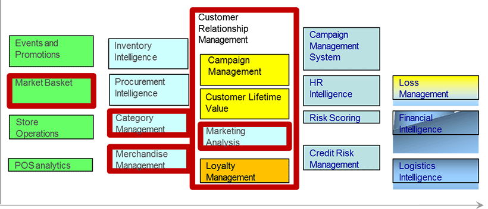

Let’s go deeper into 5 of the areas in an analytics journey. For each area, we will learn about some analytics that are likely to be done in a retailer problem.
Let’s say your goal is to increase the basket size, in other words, the amount of items bought by customers in one shopping trip. What areas of analytics would you measure?
Here are some possible questions and areas of analytics you could measure:
Goal: Monitor Buying Patterns, Increase basket size
| Analytics | Description | Possible Question |
|---|---|---|
| In basket items | Items that are part of a typical basket | What items are typically bought by which cluster/ profile? |
| Attachment Rates | Analysis of what products are bought along with a base item. | Are windows cleaning products purchased when detergents are purchased? |
| Brand switching | Analysis of what alternate brands would be bought by customer if the attachment brand is not available | If Coke is not available, does the customer buy Pepsi? |
| Demographic basket | Analysis of typical basket of items bought by specific demographic group | How are the demographics of the neighbourhood affecting what customers are buying? |
If your goal is to manage assortment of your items effectively, what areas of analytics would you measure?
Goal: Manage assortment effectively
| Analytics | Description |
|---|---|
| SKU Rationalization | Analysis of items to decide on which SKUs to store to maximize sales. SKU rationalization is a method for selecting, listing, and placing key products on the shelf. |
| Share of Shelf | Analysis of share of display shelf and the impact on sales for a category |
| Assortment Optimization | Analysis to optimize the assortment of items in a category |
To determine how well you have reduced out of stocks, or streamlined your inventory, you can measure these analytics:
Goal: Reduce Out of Stocks, Streamline Inventory
| Analytics | Description |
|---|---|
| Weeks of Supply | How long will the current stock on hand last based on current projected demand |
| Sell Through | Indicator of sales velocity. Analysis of how much was sold versus the inventory |
| Pull Through | Analysis of what other products are sold because the stores carry a specific product |
| GMROI or Gross Margin Return on (Inventory) Investment | Analysis of sales for every dollar of inventory; used to identify which products are most cost effective to store |
| Inventory Turns | Analysis of which products are fast moving |
A business would want to keep its best and most valuable customers. What are some analytics if you want to measure this?
Goal: Keep best customers, Increase share of wallet
| Analytics | Description |
|---|---|
| Share of wallet | Share of wallet is the current spend at household level versus the potential spend |
| Segmentation | Group customers with similar characteristics – e.g. buying behavior |
| Target Marketing | Identify right customer segments for marketing a product or offer |
| Campaign Analysis | Analysis of results of campaign to determine whether it worked or not |
| Customer Profiling | Characteristics of customer who exhibited same behavior |
How do you know if your marketing efforts or promotions are achieving their targeted return on investment?
Goal: Manage promotions, Achieve Marketing Return On Investment (MROI)
| Analytics | Description |
|---|---|
| Promo Lift | Increase in sales due to a promotion |
| Price Points | Analysis of price points and corresponding sales, at what price points sales go up and profitable to retailer |
| Channel Analysis | Analyze promotion by channel and its effectiveness |
| Display Analysis | In-store, aisle and other promotions and results |